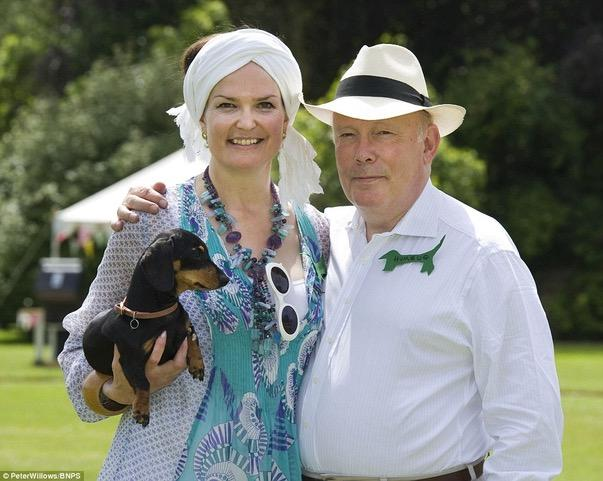
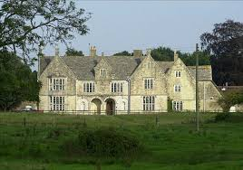
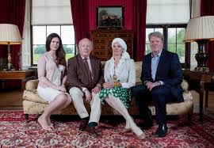
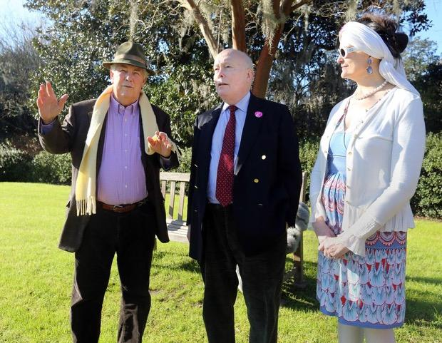
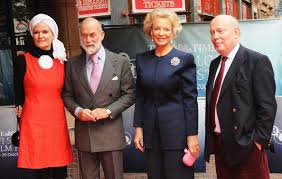
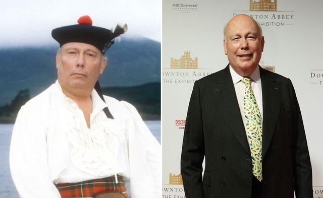

Le titre est tout
By Lucia Adams
The Rt.Hon.Julian Alexander Kitchener-Fellowes, Baron Fellowes of West Stafford, Dorset, elevated to the peerage on January 13, 2011 entered the House of Lords, one of the many non-hereditary “working peers” honored that year. A Tory to the bone he added a camel to his new coat of arms, not only because he was born in Egypt but because his wife’s family had one emblazoned on theirs’. Another title the new baron holds is Lord of Tattershall a non-peerage ceremonial embellishment his father purchased on the death of its owner, Earl Fortescue.

Emma and Julian.
His wife Emma Kitchener, formerly a Lady in Waiting to Princess Michael of Kent, is the great grandniece of Herbert, the 1st Earl Kitchener (of Khartoum!!!), so he double- barreled their surnames to preserve a link to a title for his son. When the current Lord Kitchener, unmarried, childless, dies the title will become extinct causing Fellowes to ponder “Why can’t it jump to my son?” as he campaigns to change the rules of male succession which prevents his wife from being called Countess Kitchener. In 2012 the Queen did issue a Royal Warrant of Precedence granting Lady Fellowes the same rank as the daughter of an Earl — but no title!! Oh dear.

Stafford House.
With son Peregrine Charles Morant Kitchener-Fellowes they are currently quarantined at home in West Stafford, population 291. Stafford House, which Fellowes bought in 2002, is a Grade II listed manor house with 40 acres of gardens, paddocks, woodland and the Rivers Frome and Winterborne running through it all. Fellowes, now a country squire listed in Burke’s Landed Gentry, is enjoying the peace though busy getting the The Gilded Age on the road and writing the second Downton Abbey film. With the stark absence of a sparkling social life he binges on long series like Grey’s Anatomy, Mad Men, The West Wing, The Good Wife though decidedly is not a fan of Peter Morgan’s The Crown. The Queen and the Duke of Edinburgh are still alive after all! Bad form!
A learned student of British history and traditions Fellowes reminded a recent interviewer, on the telephone in these times, that the 1918 Spanish flu was far more serious than COVID-19 killing millions and millions more than in the Great War. Prime Minister Lloyd George was suddenly rushed to a temporary hospital in Manchester’s town hall where he remained for ten days.
The Kitchener-Fellowes family.
The youngest of four sons Julian Fellowes was born in Cairo in 1949 where his father Peregrine Edward Launcelot Fellowes was a diplomat with the British Embassy and civil engineer with Shell International who campaigned to have Haile Selassie restored to the throne of Ethiopia. His son describes him as one “of the last generation of men who lived in a pat of butter without knowing it. My mother put him on a train on Monday mornings and drove up to London in the afternoon. At the flat she’d be waiting in a snappy little cocktail dress with a delicious dinner and drink. Lovely, really.” After her death he married the widow of the 15th Baron Dormer, daughter of the fourth Earl of Gainsborough, the Dormers and Gainsboroughs the oldest ennobled Roman Catholic families in Britain.
Recalling his own privileged childhood of ponies and birthday cakes, of the townhouse in South Kensington and vicarage-y type house in Chiddingly, East Sussex Fellowes notes “We weren’t a Sussex family. There were Felloweses in Aberdeenshire, Norfolk and Huntingdonshire and almost everywhere except Sussex.” Far from wealthy and a cradle Catholic he followed his father to Ampleforth College the Benedictine boarding school in York rather than attend Eton or Harrow. At Magdalene, Cambridge he read English Literature at the same time the Prince of Wales was at Trinity and was also a member of Footlights.

The Fellowes at Althorp with Lord and Lady Spencer.
After graduating with a second class degree he studied theatre at Weber Douglas in London then tried to land roles in film and theatre but his Tory politics got in the way. In Harold Wilson’s Labour Party England working class actors like Albert Finney and Tom Courtney were all the rage. It was a stigma to have a posh accent, private school background let alone being frequently featured in Tatler as the Deb’s Delight.
A proud Brexiteer Conservative (both upper and lower cases) his non-judgmental view of the aristocracy has always been mocked in the media. “All we get is this permanent negative nitpicking from the left…. people who are insecure socially” says the defender of former Culture Secretary Jeremy Hunt’s decision to axe the Film Council. “I didn’t subscribe to the kind of romantic version of socialism which of course now we call New Labour – I found it bogus then and I find it bogus now.’ Hear! Hear!

In Charleston, North Carolina earler this year.
The frustrated actor fled to Los Angeles, was turned down for the role of butler on Fantasy Island and appeared in Hollywood’s “only unsuccessful dinosaur film”. He returned to London creating a respectable career as a character actor, his most well-known role Earl Kilwillie in the BBC series Monarch of the Glen then was cast in various posh roles like the 2nd Duke of Richmond and George IV — twice. During this time he also wrote bodice rippers, nom de guerre Rachel Greville, and children’s scripts all before the game changer Gosford Park.
Contrary to popular belief, he is not related to Sir Robert Fellowes, the Queen’s former private secretary and is rather vague about a connection to Rear Admiral Sir Thomas Fellowes, who served with Nelson. His mother had working class Scottish origins, her mother an estate worker at a great house who married James Stuart -Jones a clerk who rose in the civil service to become Controller of the Central Telegraph Office. He was awarded the CBE by King George V.
The paternal Fellowes’ roots are gentry, a junior branch that moved to the colonies to earn its way. Julian Fellowes’ grandfather, Henry Morant Fellowes, a younger son, was born in Australia, and his father Peregrine in Calgary; his grandmother nee Georgiana Byrne, was Wiltshire gentry, daughter of a professor. With that convoluted obsession with class that you can only understand if you lived in England Fellowes says that his father was “probably lower-upper class, and my mother was upper-middle”.
He draws on his family history in his films and television series, especially his great aunts, the models for Violet Crawley, who snobbishly regarded his mother as out to better herself by marrying their nephew. He and his brothers were accepted into the family “because we were four phials of the sacred blood” invited for tea though their mother never asked to stay. This he said reduced him to tears as he saw the cruelty and arbitrary nature of the social class system —and its hypocrisies— which made people deeply unhappy.

Wih the Kents.
The Kitchener-Fellowes do however have a very upper class life and at their weekend parties at Stafford House there are strict rules of the house such as no jeans to lunch, no tipping soup bowls towards your chin, no folding of table napkins after dinner. At their annual summer rite, Dachshund Day where two groups converge on Stafford House, are the serious breeders and their own friends with their dachshunds. There are races and obstacle courses for the trained dogs and the others just beg for treats which will not happen this summer as the hosts typically take supper in front of the TV in a posh screening room. “It’s very luxurious, like having a tray in a cinema.”
Fellowes is president of the Thomas Hardy Society, currently battling the Prince of Wales over a plan to build 120 Arts and Crafts houses next to the home where the author wrote Tess of the d’Urbervilles and The Mayor of Casterbridge. (Far from the Madding Crowd is his favourite – ” the only one that doesn’t actually depress you”.) He was appointed Deputy Lieutenant of Dorset in 2009 and is President of the Society of Dorset Men and there are those numerous charities the Nursing Memorial Appeal, Weldmar Hospicecare Trust,, Rainbow Trust Children’s Charity, Alzheimer’s causes, the National Memorial Arboretum and Moviola, facilitating rural cinema in the West Country.

The Monarch of Glen.
As Lord of the Manor of Tattershall, he has weighed into a row between the Lincolnshire villagers and Tesco, who wanted to build a superstore there; he was virulently opposed to the plan. ‘As lord of the manor, I am entitled to have my voice heard,’ he said, though his Dorset home is 250 miles away. ”My role is to be the speaking voice of those who live there.” Many say that’s the job of the local MP.
The enduring mystery of class still enthralls Julian Fellowes. Though “it used to be fashionable to say that had died out in Britain” and though “we are more American than we used to be” it is still delicious grist for his literary mill. He is concerned about the lack of social mobility today since so many Brits are not sufficiently educated, lacking confidence, with no tools to succeed while a world of privilege flourishes and “Your parents are going to ring up and say, ‘Bobby. I don’t want to be a nuisance, but I’ve got my son coming for an interview on Tuesday…'”
The cultivated, cultural snob, as Princess Michael called him, declares, ’I don’t see why people shouldn’t be social climbers, try to get on, good luck to them – and yet in another way I feel it’s a kind of hideous game that has been practised on an unseeing public.” A practical humanist behind the titles?
In an ensuing article we will be writing about the films and television series Julian Fellowes either wrote, directed or produced including Gosford Park, Downton Abbey, Belgravia and many more.